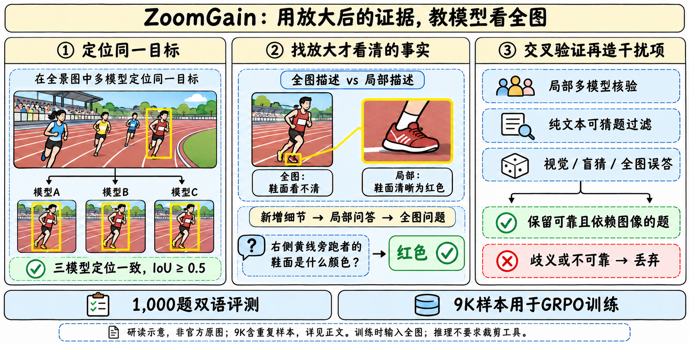

问题、数据与家族定位

为什么需要这种数据
全图VLM经常能理解场景，却把小标志、鞋面颜色、局部数字猜成合理但错误的答案。若仍让同一个模型直接看全图出题并给答案，其感知错误会进入训练标签。ZoomGain先在局部放大图上恢复证据，再把问题改写成能在完整照片中唯一定位的表述；因此训练信号针对的是难以读取的细节，而不是一般场景描述。
| 发布对象 | 用途与合并规则 |
|---|---|
| ZoomGain-4B / 9B | Qwen3.5视觉语言底座的GRPO专项，合一family |
| 4B / 9B GGUF | 同族格式/量化分发，不另计正代或专项 |
| ZoomGainBench | 1,000问题、941图片；472属性、94计数、434OCR；中英各一版 |
| ZoomGain RL Data | 9,000训练记录、7,713源图片；数据方法与权重分开描述 |
官方先从ZwZ随机取12K图片，生成23,610个QA。两个人工审核员只接受/拒绝，不编写或修订问答。训练比较中先排除1,000个benchmark条目，再按每张图片两边可用唯一问题数的较小值匹配，得到8,746对；两边各重复254对补齐9K。由此固定的是源图和记录数，并非证明两套输入像素完全一致：ZwZ保留原框线，ZoomGain用原图。按“条目排除”也不能自动推出训练与评测在图像级完全隔离。

28模型评测的口径
属性为4–6选项；计数整数exact match；OCR为ANLS≥0.7时保留分数，否则零分。各语言Overall按472/94/434题量加权，再给双语总体。论文Table2最高GPT-5.6-Sol61.08是该组历史模型和对应预算的结果，不是11月全部最新模型榜单。
Qwen/ZwZ/Vision-OPD温度0、输出2048、关闭native thinking；GLM4.6V/5.3Flash输出4096/8192；Kimi-K3启用thinking、8192；闭源四模型4096并保留供应商默认温度/思考。Agent组可多轮工具，32768总输出预算，11轮或5轮、4次或10次工具限制。不能把这些不同预算当作等计算比较。
| 模型 | EN属性 | EN计数 | EN OCR | EN总体 | ZH属性 | ZH计数 | ZH OCR | ZH总体 | 双语总体 |
|---|---|---|---|---|---|---|---|---|---|
| GPT-5.5 OpenAI () | 52.75 | 57.45 | 60.40 | 56.51 | 52.12 | 63.83 | 60.96 | 57.06 | 56.79 |
| Gemini-3.6-Flash Google DeepMind (2026) | 51.27 | 42.55 | 74.71 | 60.62 | 48.52 | 45.74 | 71.42 | 58.20 | 59.41 |
| Claude-Opus-5 Anthropic (2026) | 48.09 | 63.83 | 71.86 | 59.89 | 48.73 | 62.77 | 71.29 | 59.84 | 59.86 |
| GPT-5.6-Sol OpenAI () | 56.57 | 62.77 | 67.93 | 62.08 | 54.03 | 63.83 | 65.84 | 60.07 | 61.08 |
| DeepEyes-7B Zheng et al. (2026) | 24.79 | 20.21 | 41.05 | 31.42 | 24.36 | 22.34 | 34.46 | 28.55 | 29.99 |
| Thyme-7B Zhang et al. (2025) | 26.69 | 34.04 | 43.88 | 34.85 | 22.88 | 31.91 | 40.31 | 31.30 | 33.07 |
| DeepEyesV2-7B Hong et al. (2026) | 22.25 | 41.49 | 43.70 | 33.37 | 22.67 | 34.04 | 43.62 | 32.83 | 33.10 |
| PixelReasoner-7B Su et al. (2026) | 27.12 | 45.74 | 44.83 | 36.56 | 25.42 | 23.40 | 40.13 | 31.62 | 34.09 |
| ZwZ-4B Wei et al. (2026) | 30.08 | 39.36 | 29.68 | 30.78 | 33.47 | 50.00 | 34.45 | 35.45 | 33.12 |
| Vision-OPD-4B Yuan et al. (2026) | 35.59 | 59.57 | 45.69 | 42.23 | 39.62 | 59.57 | 43.80 | 43.31 | 42.77 |
| Vision-OPD-9B Yuan et al. (2026) | 46.40 | 55.32 | 47.18 | 47.58 | 47.67 | 60.64 | 37.97 | 44.68 | 46.13 |
| ZwZ-8B Wei et al. (2026) | 42.58 | 55.32 | 50.53 | 47.23 | 44.70 | 52.13 | 51.77 | 48.47 | 47.85 |
| MiMo-VL-7B-RL Xiaomi (2025) | 23.73 | 34.04 | 20.06 | 23.11 | 23.31 | 41.49 | 32.06 | 28.82 | 25.96 |
| GLM-4.6V (106B) Team et al. (2025) | 24.36 | 38.30 | 31.57 | 28.80 | 22.46 | 36.17 | 28.51 | 26.37 | 27.59 |
| Qwen3-VL-4B Bai et al. (2025) | 21.82 | 43.62 | 31.14 | 27.92 | 22.88 | 41.49 | 33.63 | 29.30 | 28.61 |
| Qwen3-VL-8B Bai et al. (2025) | 15.89 | 41.49 | 39.17 | 28.40 | 19.92 | 30.85 | 41.64 | 30.37 | 29.38 |
| Qwen3.5-4B Team (2026) | 21.40 | 51.06 | 34.40 | 29.83 | 22.67 | 46.81 | 34.87 | 30.23 | 30.03 |
| Qwen3.5-9B Team (2026) | 21.82 | 41.49 | 37.79 | 30.60 | 22.67 | 47.87 | 42.52 | 33.66 | 32.13 |
| Qwen3.5-35B-A3B Team (2026) | 28.18 | 44.68 | 46.10 | 37.51 | 27.33 | 51.06 | 47.95 | 38.51 | 38.01 |
| Qwen3.6-35B-A3B Qwen Team (2026c) | 26.91 | 54.26 | 50.21 | 39.59 | 26.69 | 52.13 | 46.17 | 37.54 | 38.57 |
| Qwen3-VL-235B-A22B Bai et al. (2025) | 29.45 | 52.13 | 48.01 | 39.64 | 30.93 | 50.00 | 50.90 | 41.39 | 40.51 |
| Qwen3.5-27B Team (2026) | 33.05 | 51.06 | 45.92 | 40.33 | 34.75 | 58.51 | 48.67 | 43.02 | 41.68 |
| Qwen3.6-27B Qwen Team (2026b) | 33.47 | 56.38 | 47.47 | 41.70 | 37.71 | 70.21 | 45.33 | 44.07 | 42.89 |
| Qwen3.8-27B Qwen Team (2026e) | 40.25 | 54.26 | 45.49 | 43.84 | 44.92 | 62.77 | 43.05 | 45.78 | 44.81 |
| Qwen3.5-397B-A17B Team (2026) | 33.47 | 65.96 | 51.95 | 44.55 | 38.14 | 62.77 | 50.41 | 45.78 | 45.16 |
| GLM-5.3-Flash (320B) GLM-5-Team et al. (2026) | 44.07 | 54.26 | 43.77 | 44.90 | 46.61 | 55.32 | 43.74 | 46.18 | 45.54 |
| Kimi-K3 (2.8T) Team et al. (2026a) | 49.15 | 64.89 | 45.48 | 49.04 | 46.82 | 64.89 | 46.22 | 48.26 | 48.65 |
| Qwen3.8-Flash-Next (125B) Qwen Team (2026a); Qwen Team (2026d) | 47.46 | 67.02 | 56.97 | 53.42 | 52.97 | 67.02 | 58.45 | 56.67 | 55.05 |
方法、训练与代码核对
从目标到可核验问题
三模型各返回一个有效box，所有两两IoU≥0.5才保留；坐标逐维中位数后扩框取crop。多实例时可在crop画目标标记，唯一实例不画。全图中的红框表示crop区域，crop中的红框才是目标定位标记，均不能被当成真实照片内容或答案。
同一强VLM独立描述全图指定区域和放大crop。GLM-5.2提取只在局部描述中明确、全图描述中不清或缺失的事实，生成局部问题，再用全图指称替换局部称呼，保持答案。caption的遗漏仍可能被误当分辨率差；跨模型核验缓解这种风险，不能消灭相关幻觉。
EDGE_REWRITER同时审crop与全图，检测目标指称歧义、文字跨边界和计数集合越界。非OCR重写必须保持答案；OCR仅可收窄到原答案内完整文本/指定前后缀，不得从全图新增答案文字；越出crop的计数集合丢弃。空间表述区分观察者左右、人体自身左右和相机深度，避免把crop边缘错当原图边缘。
| 环节 | 官方模型/阈值 |
|---|---|
| 初始/成对caption、目标枚举、双图审查 | Qwen3.5-397B-A17B |
| grounding | Qwen3.5-397B-A17B、Qwen3-VL-235B-A22B、Kimi-K2.6，三方一致 |
| 新增事实、双语QA | GLM-5.2 |
| 局部验证 | Qwen3-VL和Kimi，每模型10次，均至少6次正确 |
| 盲猜过滤 | 三模型每方10次；三方各至少3次正确才拒绝 |
| 答案等价判断 | Qwen3.5-122B-A10B |
| 干扰项聚类/池整理 | DeepSeek-V4-Pro |
| 最终选择题验证 | 三模型各至少6/10，最多3轮，含初检与两次修复 |
干扰项来自可见的其他对象/属性、无图盲猜，以及三模型看全图时的错误回答（各10次、共30次）。合并语义重复，移除等价于答案或也正确的选项，保持来源可追溯。OCR和计数继续用开放回答，不走选择题干扰项流程。其他模型也易选全图错误项是论文的分析发现，不等于全模型共享同一个内部表征。

9K GRPO的实际设置
论文G：batch64、每题8rollout、1epoch/140步，评估step140，LR1e-6，无KL，最大回复2046。公开train_zoomgain.sh：FSDP2、FP32主权重/BF16计算、wd0.01、8GPU默认、rollout温度1/top-p1，默认prompt25000、response2048、max-model-len32768；vision tower可训练。2046/2048差异必须保留，脚本默认不是原始run配置的完整证明。4B/9B包装脚本只是设置实验名并转入共同入口，实际BASE_MODEL需显式指定。
reward.py要求comparison_dataset=zoomgain且scoring元数据答案与ground_truth相同。取最后一个完整answer标签：选择题按选项exact match、计数按数值相等、OCR阈值ANLS。RL代码明确OCR忽略大小写、去全部Unicode空白；评测按annotation的case_sensitive标志，不能说训练与每个测试实例逐字同规则。format_reward_weight默认0；长度截断被记录，但只要有完整末尾标签仍可计分，不额外默认惩罚。没有执行下载代码。
实验、消融与研究判断

| Model | ZoomGain Bench | Zoom Bench | V* Bench | HR 4K | HR 8K | MME-RW Lite | Tree Bench | Visual Probe | CV- Bench | MMStar | MMVP | Baby Vision | Perception Bench | O3- Bench | Avg. Only Held-out |
|---|---|---|---|---|---|---|---|---|---|---|---|---|---|---|---|
| GPT-5.1 | 23.22 | 47.22 | 70.16 | 67.00 | 65.25 | 45.86 | 47.65 | 29.90 | 84.22 | 71.60 | 32.67 | 13.92 | 28.97 | 31.01 | 48.88 |
| Qwen3-VL-235B-A22B | 40.51 | 49.11 | 87.96 | 84.50 | 81.62 | 58.16 | 53.58 | 46.41 | 86.72 | 76.33 | 64.00 | 18.30 | 35.50 | 60.58 | 61.75 |
| Qwen3.5-122B-A10B | 41.11 | 51.83 | 84.82 | 86.50 | 83.75 | 57.89 | 54.07 | 44.85 | 88.06 | 74.60 | 70.00 | 19.07 | 38.80 | 65.22 | 63.04 |
| Qwen3.5-397B-A17B | 45.16 | 54.91 | 87.43 | 86.50 | 85.12 | 57.06 | 53.33 | 49.51 | 89.57 | 76.00 | 72.67 | 20.36 | 47.50 | 72.17 | 65.55 |
| GLM-5.3-Flash (320B) | 45.54 | 56.80 | 89.01 | 87.00 | 84.75 | 62.12 | 60.25 | 48.35 | 88.94 | 79.47 | 74.67 | 20.10 | 41.90 | 65.51 | 66.07 |
| Gemini-3-Flash | 51.27 | 59.29 | 86.39 | 87.88 | 85.00 | 55.86 | 48.64 | 49.71 | 89.57 | 83.60 | 82.67 | 34.51 | 43.50 | 71.01 | 67.51 |
| Qwen3.5-4B | 30.03 | 48.88 | 81.68 | 81.25 | 77.63 | 57.89 | 49.38 | 43.30 | 85.99 | 66.80 | 57.33 | 14.69 | 33.10 | 54.20 | 57.86 |
| Qwen3.5-4B w/ ZwZ 9K | 40.99 | 57.63 | 86.91 | 81.25 | 79.00 | 57.43 | 45.19 | 52.43 | 86.58 | 68.93 | 53.33 | 10.82 | 30.43 | 56.23 | 58.94 |
| Qwen3.5-4B w/ ZoomGain 9K | 55.81 | 59.88 | 90.05 | 87.25 | 83.88 | 61.59 | 49.14 | 57.28 | 88.02 | 72.53 | 61.33 | 21.13 | 36.23 | 63.19 | 63.96 |
| Qwen3.5-4B Δ vs ZwZ | +14.83 | +2.25 | +3.14 | +6.00 | +4.88 | +4.17 | +3.95 | +4.85 | +1.44 | +3.60 | +8.00 | +10.31 | +5.80 | +6.96 | +5.03 |
| Qwen3.5-4B Δ vs Base | +25.78 | +11.00 | +8.37 | +6.00 | +6.25 | +3.70 | -0.24 | +13.98 | +2.03 | +5.73 | +4.00 | +6.44 | +3.13 | +8.99 | +6.10 |
| Qwen3.5-9B | 32.13 | 50.30 | 86.91 | 82.13 | 79.63 | 58.52 | 49.88 | 44.66 | 86.27 | 71.73 | 60.00 | 15.98 | 34.20 | 56.52 | 59.75 |
| Qwen3.5-9B w/ ZwZ 9K | 44.07 | 58.93 | 90.58 | 85.50 | 82.38 | 61.70 | 47.90 | 52.62 | 88.16 | 73.27 | 63.33 | 17.27 | 34.13 | 57.10 | 62.53 |
| Qwen3.5-9B w/ ZoomGain 9K | 55.48 | 60.36 | 93.19 | 90.25 | 85.50 | 63.31 | 53.33 | 56.31 | 88.58 | 73.87 | 70.00 | 17.53 | 39.00 | 68.12 | 66.10 |
| Qwen3.5-9B Δ vs ZwZ | +11.41 | +1.43 | +2.62 | +4.75 | +3.13 | +1.62 | +5.43 | +3.69 | +0.42 | +0.60 | +6.67 | +0.26 | +4.87 | +11.01 | +3.58 |
| Qwen3.5-9B Δ vs Base | +23.35 | +10.06 | +6.28 | +8.12 | +5.87 | +4.79 | +3.45 | +11.65 | +2.31 | +2.14 | +10.00 | +1.55 | +4.80 | +11.60 | +6.35 |
Table3均分排除ZoomGainBench、包含13项held-out。9B对ZwZ的O3增益11.01、对Base为11.60，不能混用；4B TreeBench49.14低于Base49.38，虽高于ZwZ45.19。9B均分66.10接近GLM5.3Flash66.07，但Gemini3Flash67.51更高；这不是小模型在所有视觉/推理任务超过大模型。
消融表只平均10项held-out，缺少三项general perception，不能与主表13项均分直接比较。完整4B60.96，去新增证据58.57，去专门干扰项59.14；完整流程在MME-RW61.59仍低于去干扰项62.69，故平均贡献不等于每项都获益。
| 4B版本 | 新增证据 | 专门干扰项 | ZoomGain | ZoomBench | V* | HR4K | HR8K | MME-RW | Tree | VisualProbe | BabyVision | Perception | O3 | 10项均分 |
|---|---|---|---|---|---|---|---|---|---|---|---|---|---|---|
| Qwen3.5-4B | – | – | 30.03 | 48.88 | 81.68 | 81.25 | 77.63 | 57.89 | 49.38 | 43.30 | 14.69 | 33.10 | 54.20 | 54.20 |
| +ZoomGain 9K | ✗ | ✓ | 49.71 | 56.45 | 88.48 | 85.50 | 81.75 | 60.24 | 48.40 | 52.82 | 18.56 | 34.70 | 58.84 | 58.57 |
| +ZoomGain 9K | ✓ | ✗ | 46.85 | 57.04 | 90.05 | 85.75 | 80.25 | 62.69 | 48.89 | 54.76 | 17.53 | 34.97 | 59.42 | 59.14 |
| +ZoomGain 9K | ✓ | ✓ | 55.81 | 59.88 | 90.05 | 87.25 | 83.88 | 61.59 | 49.14 | 57.28 | 21.13 | 36.23 | 63.19 | 60.96 |
训练实验统一温度0与CoT提示；多数2048输出，BabyVision/PerceptionBench/O3用8192且GPT-5.5裁判；MMVP paired accuracy、CV-Bench balanced、MME-RW1919题、VisualProbe按141/268/106题量加权。不同harness、裁判和图片处理不能忽略。论文未给重复训练seed区间，不能把小幅差异当确定提升。
错误分析中，全图误答类占错误选择71.7%，随机基线54.5%；最小目标面积四分位平均28.9%，最大55.2%。这些是构造流程选出的困难题分布，不是任意现实图片的总体错误率。
原件与关联
- 官方HF模型卡、4B
- 报告HTML、GitHub
- 261026_ZwZ2、Sing-VL-S1
- 中文Poster：zoomgain_poster_zh.html